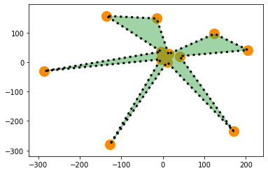

2.2 Forma, tamaño y color
Manipulación de forma, tamaño y color en los gráficos
Mira este video de 8:12 a 16:55
Para español, haga click en configuración, seleccione "español" debajo de los subtítulos.
Traducción por Evelia L. Coss-Navarrete, Langebio-Cinvestav, Irapuato, México)
# Para reproducir el siguiente tutorial, presiona shift + enter
from IPython.display import YouTubeVideo
from datetime import timedelta
start=int(timedelta(hours=0, minutes=8, seconds=12).total_seconds())
end=int(timedelta(hours=0, minutes=16, seconds=55).total_seconds())
YouTubeVideo("PJ1dvAgOAj0",start=start,end=end,width=640,height=360)
La siguiente es una transcripción del video.
💡 Recuerde: primero debe importar
matplotlibpara poder hacer gráficos. A continuación se muestran los datos con los que trabajaremos en esta lección que se utilizan en el video. Estas son listas de valores de coordenadasxeypara 15 especies diferentes de Vitis y Ampelopsis. Ejecute la celda a continuación para leer los datos para completar esta lección.
# Esta celda contiene la lista de valores x y y para
# las formas de las hojas de las 15 especies de Vitis y Ampelopsis.
# Cada lista está abreviada con la inicial del género y epíteto de la especie.
# Ampelopsis acoutifolia (en realidad aconitifolia)
# NOTA: Hay un error de transcripción para esta especie, que en realidad es
# Ampelopsis aconitifolia (no es A. "acoutifolia")
# El error se propaga en los videos, narración, texto y cuadernos
# pero no afecta la lección en cuestión para trazar en matplotlib
Aaco_x = [13.81197507,-14.58128237,-135.3576208,-3.48017966,-285.0289837,-4.874351136,-126.9904669,10.54932685,170.4482865,40.82555888,205.158889,124.6343366,13.81197507]
Aaco_y = [27.83951365,148.6870909,157.2273013,35.73510131,-30.02915903,9.54075375,-280.2095191,0.200400495,-234.1044141,20.41991159,41.33121759,96.75084391,27.83951365]
# Ampelopsis brevipedunculata
# NOTA: Esta especie ahora se conoce como A. glandulosa var. brevipedunculata
Abre_x = [40.00325135,-81.37047548,-186.835592,-139.3272085,-287.5337006,-89.61277053,-134.9263008,47.43458846,144.6301719,163.5438321,225.9684307,204.719859,40.00325135]
Abre_y = [96.8926433,203.3273536,134.0172438,99.7070006,-81.35389923,-17.90701212,-335.624547,-80.02986776,-262.0385648,-27.31979918,-42.24377429,82.08218538,96.8926433]
# Ampelopsis cordata
Acor_x = [41.26484889,-99.68651819,-203.5550411,-181.4080156,-226.4063517,-174.1104713,-142.2197176,81.25359041,113.9079805,205.9930561,230.8000389,226.6914467,41.26484889]
Acor_y = [105.1580727,209.8514829,131.8410788,111.9833751,-70.79184424,-60.25829908,-326.5994491,-170.6003249,-223.0042176,-44.58524791,-45.80679706,71.64004113,105.1580727]
# Vitis acerifolia
Vace_x = [47.55748802,-102.1666218,-218.3415108,-183.5085694,-234.8755094,-152.1581487,-113.8943819,53.48770667,84.83899263,206.557697,240.589609,243.5717264,47.55748802]
Vace_y = [111.9982016,241.5287104,125.6905949,110.350904,-108.1932176,-74.67866027,-283.2678229,-161.1592736,-243.1116283,-54.52616737,-68.953011,95.74558526,111.9982016]
# Vitis aestivalis
Vaes_x = [34.13897003,-59.06591289,-192.0336456,-169.5476603,-261.8813454,-154.4511279,-132.6031657,56.04516606,119.9789735,205.0834004,246.928663,209.2801298,34.13897003]
Vaes_y = [80.26320349,227.2107718,155.0919347,123.2629647,-86.47992069,-70.12024178,-317.80585,-156.8388147,-247.9415158,-31.73423173,-28.37195726,120.2692722,80.26320349]
# Vitis amurensis
Vamu_x = [36.94310365,-63.29959989,-190.35653,-180.9243738,-255.6224889,-172.8141253,-123.8350652,60.05314983,113.598307,218.8144919,238.6851057,210.9383524,36.94310365]
Vamu_y = [87.06305005,230.9299013,148.431809,128.4087423,-88.67075769,-84.47396366,-298.5959647,-181.4317592,-241.2343437,-37.53203788,-30.63962885,115.7064075,87.06305005]
# Vitis cinerea
Vcin_x = [41.13786595,-78.14668163,-195.0747469,-185.81005,-238.1427795,-181.5728492,-127.6203541,65.24059352,103.8414516,214.1320626,233.1457326,222.7549456,41.13786595]
Vcin_y = [98.40296936,233.6652514,136.6641628,117.9719613,-86.41814245,-86.14771041,-310.2979998,-190.9232443,-230.5027809,-50.27050419,-42.94757891,107.8271097,98.40296936]
# Vitis coignetiae
Vcoi_x = [36.29348151,-51.46279315,-183.6256382,-176.7604659,-253.3454527,-191.8067468,-123.413666,66.11061054,111.4950714,215.7579824,236.7136632,197.5512918,36.29348151]
Vcoi_y = [86.42303732,222.7808161,150.0993737,127.4697835,-85.23634837,-93.3122815,-301.819185,-203.7840759,-239.8063423,-35.30522815,-25.15349577,121.1295308,86.42303732]
# Vitis labrusca
Vlab_x = [33.83997254,-63.35703212,-191.4861127,-184.3259869,-257.3706479,-179.056825,-124.0669143,68.23202857,123.213115,222.8908464,243.056641,205.2845683,33.83997254]
Vlab_y = [81.34077013,222.8158575,153.7885633,132.4995037,-80.2253417,-80.67586345,-296.8245229,-185.0516494,-238.8655248,-38.2316427,-29.21879919,111.424232,81.34077013]
# Vitis palmata
Vpal_x = [31.97986731,-68.77672824,-189.26295,-164.4563595,-260.2149738,-149.3150935,-131.5419837,65.86738801,127.3624336,202.6655429,240.0477009,219.0385121,31.97986731]
Vpal_y = [78.75737572,232.9714762,149.7873103,124.8439354,-71.09770423,-56.52814058,-329.0863141,-149.308084,-231.1263997,-33.22358667,-33.0517181,114.3110289,78.75737572]
# Vitis piasezkii
Vpia_x = [18.70342336,-28.68239983,-133.7834969,-32.76128224,-305.3467215,-7.429223951,-146.2207875,21.81934547,163.1265031,65.21695943,203.4902238,139.6214571,18.70342336]
Vpia_y = [41.05946323,160.3488167,157.9775135,64.93177072,-59.68750782,18.85909594,-362.1788431,7.556816875,-253.8796355,21.33965973,17.69878265,93.72614181,41.05946323]
# Vitis riparia
Vrip_x = [44.65674776,-85.47236587,-205.1031097,-174.088415,-239.9704675,-161.1277029,-125.4900046,58.08609552,89.2307808,204.9127104,236.0709257,229.8098573,44.65674776]
Vrip_y = [106.5948187,235.8791214,130.341464,116.8318515,-110.5506636,-76.73562488,-300.1092173,-169.0146383,-247.0956802,-42.2253331,-54.23469169,103.9732427,106.5948187]
# Vitis rupestris
Vrup_x = [51.29642881,-132.9650549,-227.6059714,-201.31783,-207.965755,-149.2265432,-98.64097334,48.33648281,75.91437502,208.7784453,237.4842778,263.3479415,51.29642881]
Vrup_y = [123.7557878,233.5830974,109.6847731,95.43848563,-95.82512925,-80.06286127,-236.7411071,-163.7331427,-213.2925544,-77.04510916,-86.40789274,69.86940263,123.7557878]
# Vitis thunbergii
Vthu_x = [22.61260382,-3.204532702,-150.3627277,-79.39836351,-271.8885204,-70.74704134,-168.6002498,36.68300146,172.978549,116.9174032,227.8346055,148.3453958,22.61260382]
Vthu_y = [50.82336098,194.3865012,181.2536906,86.8671412,-57.33457233,-23.85610668,-334.279317,-67.36542042,-234.1205595,7.151772223,28.16801823,138.9705667,50.82336098]
# Vitis vulpina
Vvul_x = [39.44771371,-83.62933643,-194.2000993,-175.9638941,-227.8323987,-180.8587446,-135.986247,71.94543538,99.8983207,207.0950158,231.7808734,222.7645396,39.44771371]
Vvul_y = [96.44934373,230.0148139,136.3702366,119.8017341,-83.09830126,-75.38247957,-332.9188424,-184.4324688,-222.8532423,-41.89574792,-44.70218529,101.9138055,96.44934373]
# Average grape leaf
avg_x = [35.60510804,-67.88314703,-186.9749654,-149.5049396,-254.2293735,-135.3520852,-130.4632741,54.4100207,120.7064692,180.696724,232.2550642,204.8782463,35.60510804]
avg_y = [84.95317026,215.7238025,143.85314,106.742536,-80.06000256,-57.00477464,-309.8290405,-137.6340316,-237.7960327,-31.10365842,-30.0828468,103.1501279,84.95317026]
Entonces ha visto las funciones básicas de plot(), scatter() y fill(), pero puede hacer mucho más que eso. Veamos cómo podemos manipular la forma, el tamaño y el color de los elementos en estas gráficas.
Así que recuerde los hashtags (#), como ha visto en estos cuadernos, que este es una forma de que Python ignore cualquier código o texto que coloques después de un hashtag (#). Aquí he escrito todo excepto la trama muy básica que acaba de ver en la celda anterior. Entonces aquí es donde nosotros terminó antes y aquí, en estos hashtags (#), te muestro todos estos argumentos diferentes que puedes usar. Cosas como color, estilo de línea, anchos de línea, tamaño y alfa (que es lo transparente que es algo), relaciones de aspecto, títulos, etiquetas del eje "x" e incluso encender y apagar las etiquetas de los ejes. Entonces este es el punto principal de este video tutorial y la actividad asociada con esta lección, que es explorar todos estos parámetros y todas las opciones que tiene para que tenga la poder para crear los gráficos y visualizaciones que desee.
# La trama del cuaderno de la lección anterior
# Y comentarios de los diferentes argumentos
# exploraremos para personalizar la trama a nuestro gusto
plt.plot(Aaco_x, Aaco_y) # color="k", linestyle=":", linewidth=3
plt.scatter(Aaco_x, Aaco_y) # color="darkorange", s=200
plt.fill(Aaco_x, Aaco_y) # color=""#42A84F", alpha=0.5
# Nota en el video se usa plt.axes.set_aspect()
# Pero esto crea una advertencia, por lo que
# se usa gca() (Get Current Axes) en su lugar
# plt.gca().set_aspect("equal", "datalim")
# box o datalim, box exactamente igual,
# pero datalim tanto como sea necesario
# plt.title("Ampelopsis acoutifolia", fontsize=18, style="italic", fontweight="bold")
# plt.xlabel("x values")
# plt.ylabel("y values")
# plt.axis("off")
Entonces uno por uno voy a tomar estos y exploraremos todas las diferentes formas en que puede manipular estos gráficos.
Así por ejemplo, la función de la trama. Podemos cambiar el color. Hay una abreviatura en Python para los colores. Puede usar letras a veces para denotar un color. Por ejemplo, "k" se refiere a solo negro. Entonces podemos poner color "k". Observe que las líneas son azules en este momento, pero si decimos "k" para el negro, ahora son negros.
Es solo una línea simple en este momento, pero podríamos decir estilo de línea es igual a dos puntos y en lugar de una línea recta ahora podríamos obtener un estilo diferente. Por ejemplo, un punteado línea y digamos que queremos una línea más ancha. Podríamos decir que el ancho de línea es igual a tres, algo más que uno, que es ahora mismo, y pueden ver que obtenemos una línea mucho más gruesa. Así que eso es para la línea la parte de la gráfica.
# La trama del cuaderno de la lección anterior
# Y comentarios de los diferentes argumentos
# exploraremos para personalizar la trama a nuestro gusto
plt.plot(Aaco_x, Aaco_y, color="k", linestyle=":", linewidth=3)
plt.scatter(Aaco_x, Aaco_y) # color="darkorange", s=200
plt.fill(Aaco_x, Aaco_y) # color=""#42A84F", alpha=0.5
# Nota en el video se usa plt.axes.set_aspect()
# Pero esto crea una advertencia, por lo que
# se usa gca() (Get Current Axes) en su lugar
# plt.gca().set_aspect("equal", "datalim")
# box o datalim, box exactamente igual,
# pero datalim tanto como sea necesario
# plt.title("Ampelopsis acoutifolia", fontsize=18, style="italic", fontweight="bold")
# plt.xlabel("x values")
# plt.ylabel("y values")
# plt.axis("off")
¿Qué pasa con la dispersión? Así que vamos a decir que queremos que el color sea naranja oscuro. Voy a mostrarle un enlace después de este donde puede buscar todos estos colores y cómo hacer referencia a ellos. Entonces, si decimos color naranja oscuro, puedes ver que los puntos se vuelven naranja oscuro y una "s" se refiere al tamaño. Hagamos estos puntos realmente grandes, digamos que el tamaño es igual a 80, y ahora puedes ver que estos puntos son realmente importantes. Podríamos ir al 800, cómo se vería realmente grande. Digamos algo más como 200. Así que ahora tenemos algunos puntos importantes.
# La trama del cuaderno de la lección anterior
# Y comentarios de los diferentes argumentos
# exploraremos para personalizar la trama a nuestro gusto
plt.plot(Aaco_x, Aaco_y, color="k", linestyle=":", linewidth=3)
plt.scatter(Aaco_x, Aaco_y, color="darkorange", s=200)
plt.fill(Aaco_x, Aaco_y) # color=""#42A84F", alpha=0.5
# Nota en el video se usa plt.axes.set_aspect()
# Pero esto crea una advertencia, por lo que
# se usa gca() (Get Current Axes) en su lugar
# plt.gca().set_aspect("equal", "datalim")
# box o datalim, box exactamente igual,
# pero datalim tanto como sea necesario
# plt.title("Ampelopsis acoutifolia", fontsize=18, style="italic", fontweight="bold")
# plt.xlabel("x values")
# plt.ylabel("y values")
# plt.axis("off")
Para el relleno del polígono, otro esquema de color que podemos usar es algo llamado códigos hexadecimales. Entonces, si te das cuenta, esta es una serie de seis caracteres y tienen un hashtag antes y tienen acotaciones (") porque son una secuencia. Este es un color específico, es un color verde. En este caso, esta es una forma de codifica todos los colores y de nuevo te mostraré un enlace donde puedes encontrar tus propios códigos hexadecimales y le da mucho poder para seleccionar el color exacto que desea.
A continuación tenemos algo llamado alfa y alfa es una transparencia. Entonces, cuando alfa se establece en 1, que es el valor predeterminado, el objeto no es transparente. Pero si lo configuramos en 0.5, entonces está a la mitad de transparencia y si nota ahora, el relleno del polígono, que ahora se puede ver porque nosotros el polígono se hizomedio transparente, se puede ver, por ejemplo, que los puntos se muestran parcialmentea través de el.
# La trama del cuaderno de la lección anterior
# Y comentarios de los diferentes argumentos
# exploraremos para personalizar la trama a nuestro gusto
plt.plot(Aaco_x, Aaco_y, color="k", linestyle=":", linewidth=3)
plt.scatter(Aaco_x, Aaco_y, color="darkorange", s=200)
plt.fill(Aaco_x, Aaco_y, color="#42A84F", alpha=0.5)
# Nota en el video se usa plt.axes.set_aspect()
# Pero esto crea una advertencia, por lo que
# se usa gca() (Get Current Axes) en su lugar
# plt.gca().set_aspect("equal", "datalim")
# box o datalim, box exactamente igual,
# pero datalim tanto como sea necesario
# plt.title("Ampelopsis acoutifolia", fontsize=18, style="italic", fontweight="bold")
# plt.xlabel("x values")
# plt.ylabel("y values")
# plt.axis("off")

Si nota que la escala de estos ejes no es consistente. Crea una especie de hoja deformada. Hay una forma de establecer la relación de aspecto para estos ejes, set_aspect. Queremos que sean iguales. Así que si ejecutamos esto, ahora puedes ver que tenemos una caja y que el espaciado entre los ejes es proporcional. Hay dos opciones diferentes. Tienes
"box" o "datalim". "Box" obliga a la gráfica a ser un cuadro, pero "datalim" creará ejes iguales, pero permitirá que los ejes funcionen siempre que necesitan tener todos los datos dentro de la gráfica. Entonces ya no lo está forzando a ser una caja.
Podemos poner un título. La función para esto es plt.title(). La especie es Ampelopsis aconitifolia y puede cambiar su título y formatearlo de todas las formas que desee. Tu puedes elegir un tamaño de fuente, puede elegir un estilo. Hagámoslo en cursiva, porque suele ser cómo la gente formatea los nombres de las especies. Y puedeshacer cosas como un tamaño de fuente para hacerlo negritas, por ejemplo. Entonces, si usamos estos parámetros para los argumentos de plt.title(), puede ver que obtenga un título en negrita y cursiva. Podemos dar nombres a nuestros ejes en "x" y en "y". Vamos a llamarlos "valores x" y "valores y" y puede ver que losvaloresen "x" y en "y"para nuestros dos ejes ahora tienen nombre.
Y hay todo tipo de funciones. Entonces, por ejemplo, este, plt.axis(), puede estar en, donde tiene todos los valores mostrados o, por ejemplo, podría estar desactivado. Tal vez si dibujamos formas como esta, preferimos no mirar todos los números en el eje, por lo que pueden estar activados o desactivados.
plt.plot(Aaco_x, Aaco_y, color="k", linestyle=":", linewidth=3) # color="k", linestyle=":", linewidth=3
plt.scatter(Aaco_x, Aaco_y, color="darkorange", s=200) # color="darkorange", s=200
plt.fill(Aaco_x, Aaco_y, color="#42A84F", alpha=0.5) # color=""#42A84F", alpha=0.5
plt.gca().set_aspect("equal", "datalim") # box or datalim, box exactly equal, but datalim as much as needed
plt.title("Ampelopsis aconitifolia", fontsize=18, style="italic", fontweight="bold")
plt.xlabel("x values")
plt.ylabel("y values")
plt.axis("off")
El objetivo de esta celda en particular era mostrarte que hay muchos, muchos argumentos y elecciones para hacer, y dentro de esos argumentos, de qué color, forma o tamaño de los diferentes elementos de la gráfica que le gustaría utilizar. La cantidad de opciones que puede tomar para los gráficos de matplotlib son tremendos, por lo que realmente te recomiendo que dediques tiempo a explorar exactamente lo que se puede cambiar en varios gráficos de matplotlib. Aquí hay algunos enlaces que le ayudarán a explorar. Esto es uno de los aspectos más creativos de la codificación, así que trátelo como si estuviera explorando. No hay nada malo respuestas cuando se trata de visualización.
Entonces, por ejemplo, todos los diferentes colores que puedes uso, estos son todos los colores nombrados en matplotlib. Puede referirse a estos por su nombre.
También mencioné los códigos hexadecimales. Hay numerosos generadores de código hexadecimal que puede buscar en Google y buscar. Entonces, por ejemplo, dentro de este esquema de color aquí, puede ver el hashtag y este es el código hexadecimal de seis caracteres. Y puede cambiar el tono, por ejemplo, y luego cambiar su luminosidad y para que pueda ver realmente el poder de tener la capacidad de elegir casi cualquier color que desee utilizando estos códigos hexadecimales.
Y luego una forma de explorar todas las diferentes formas en que puede emplear en matplotlib es mirar gráficas de muestra. Así que pondré este enlace también en el cuaderno, pero puedes explorar. Tienen estas galerías de diferentes tipos de gráficas y una muy buena forma de aprender matplotlib es si tiene datos y tiene un tipo particular de visualización en mente para ir a esta galería e intentar encontrar las gráficas que le gustaría hacer y luego puede buscar en los ejemplos e intente descubrir por sí mismo todas las cosas que puede hacer para crear la gráfica que desea y todos los parámetros y diferentes elecciones que tiene para realizar esa visualización.